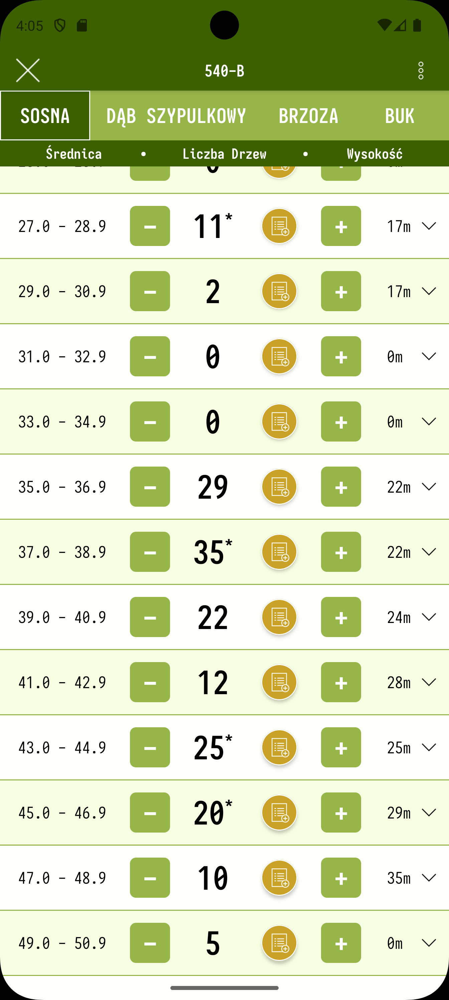
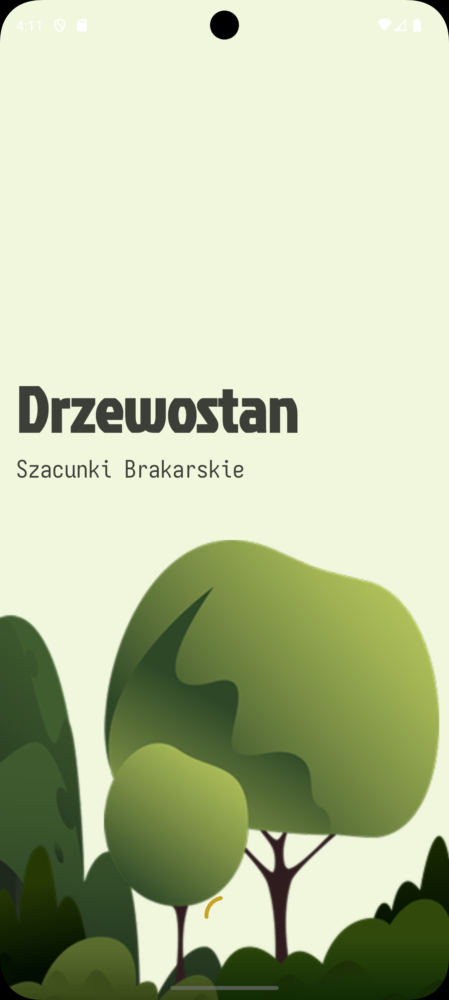
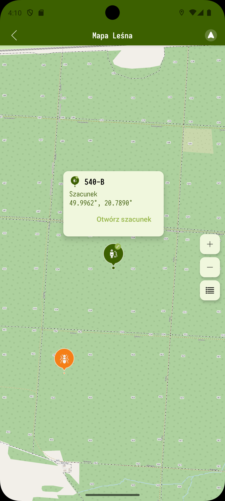
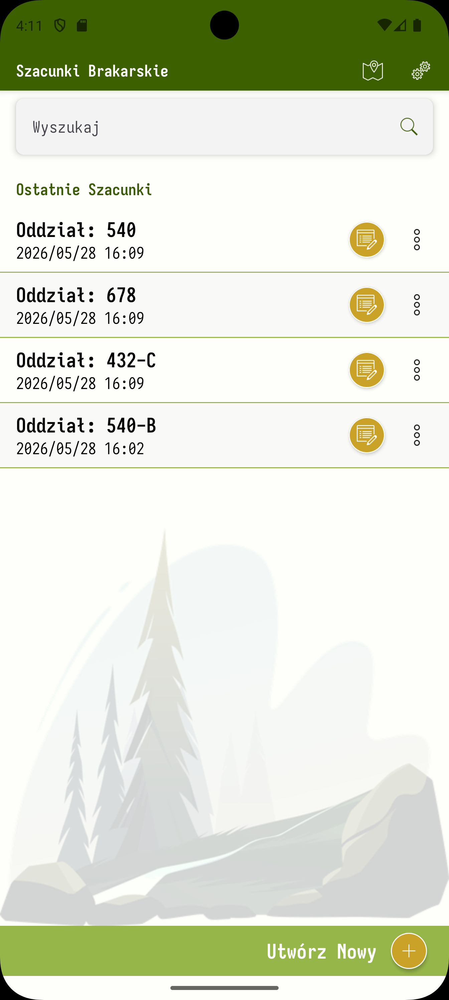
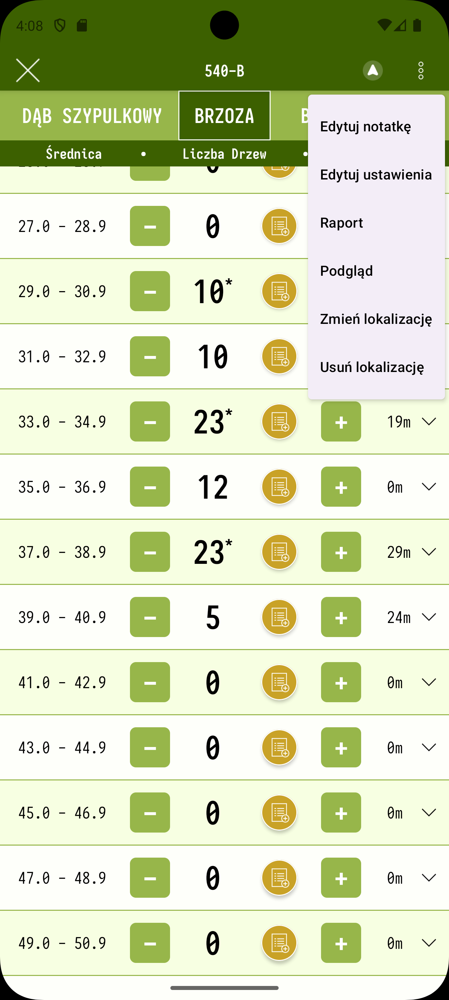
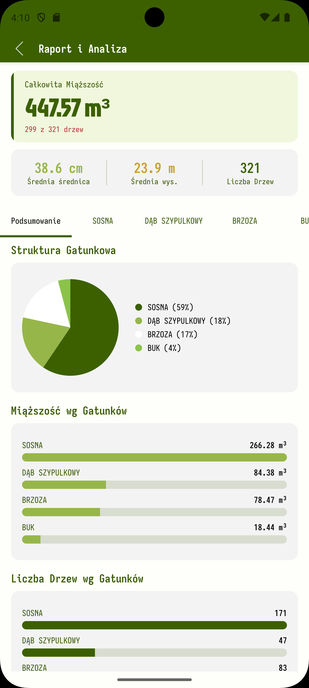
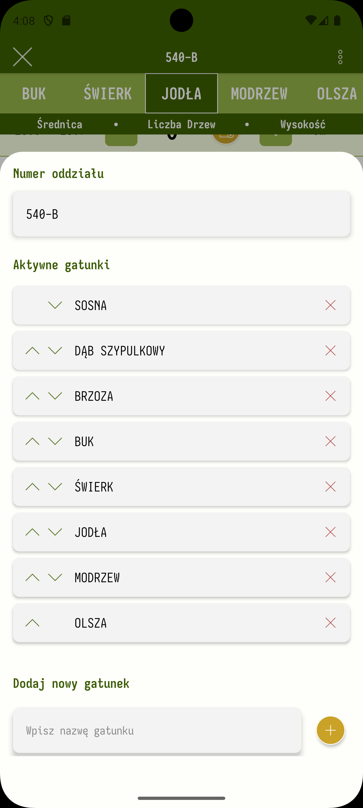
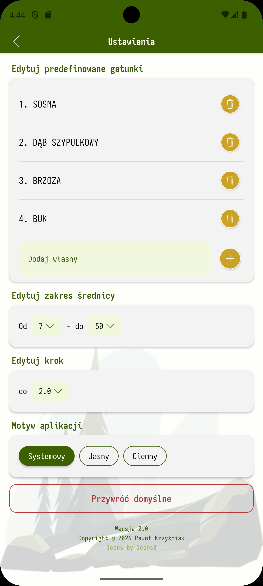

Profesjonalne szacunki brakarskie, interaktywna mapa leśna z GPS i eksport raportów PDF — wszystko w jednej aplikacji na Android i Desktop.
W pełni darmowa · bez reklam · bez ukrytych opłat



Trzy filary aplikacji, które digitalizują pracę leśnika.
Profesjonalna inwentaryzacja drzewostanu z podziałem na gatunki, klasy miarowe i klasy jakości. Automatyczne obliczanie miąższości na podstawie pierśnic i wysokości.
Mapa w terenie z nakładką Leśnej Mapy Numerycznej (LMN) z Banku Danych o Lasach, systemem GPS i niestandardowymi markerami.
Wbudowane wykresy do szybkiej analizy zebranych danych. Struktura gatunkowa, rozkład miąższości i klas jakości — bez wychodzenia z aplikacji.
Prawdziwe ekrany — dokładnie to, co zobaczysz na swoim urządzeniu.
przesuń aby zobaczyć więcej





Od terenu do raportu — prosty, spójny przepływ pracy.
Nadaj nazwę oddziału i wybierz gatunki drzew, które będziesz inwentaryzować. Sesja przechowuje wszystkie dane pomiarowe w jednym miejscu.
Wpisuj pierśnice i wysokości drzew na bieżąco. Aplikacja natychmiast oblicza miąższość. Opcjonalnie przypisz GPS do lokalizacji szacunku na mapie.
Otwórz mapę z nakładką LMN, sprawdź swoją pozycję GPS i zarządzaj markerami terenowymi. Wszystkie szacunki z lokalizacją widoczne są jako piny na mapie.
Jednym kliknięciem wygeneruj profesjonalny raport A4 z tabelami gatunkowymi. Wyślij go e-mailem lub do dowolnego komunikatora bezpośrednio z urządzenia.
Ta sama aplikacja, to samo doświadczenie — na telefonie w terenie i przy biurku.